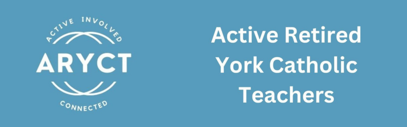

ARYCT (Active Retired York Catholic Teachers) is a community of retired OECTA members from York Region who get together throughout the year to stay connected, active, and involved. We meet for lunches, outings, guest speakers, and hands-on activities like our milk bag weavers group — and we show up for each other and our wider community, from walking in the York Region Pride Parade to providing music at the OECTA Retirement Mass.
We're also proud to give back. Through member donations and fundraising, ARYCT has supported organizations like St. Vincent de Paul, the Salvation Army, Ride for Cancer, and local refugee and outreach programs, while our Fill the Truck drives and hand-knitted donations have reached families and shelters across the region.
Whether it's a potluck, a day trip, a themed tour, or simply lunch with old friends, ARYCT is about keeping the relationships and community spirit of our teaching years alive in retirement.
Upcoming events will be posted here — check back soon!
Our latest newsletter, "Looking Back and Moving Forward," looks at a year of listening, creating, serving and celebrating together, plus what's coming up next.
Read the July 2026 newsletter →
Questions, suggestions, or want to get involved? Email us at retiredteachersaryct@gmail.com.
Join Us on Social Media